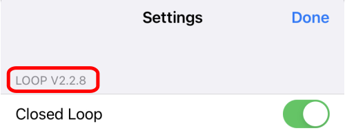

Loop Releases
Loop Releases¶
The new features added with each Loop release (starting with Loop version 2.0) are provided for reference.
Loop 3 Compatibility¶
Be aware that Loop 3 is forward compatible:
- You can build Loop 3 over older versions of Loop and maintain therapy settings as well as your configuration for CGM and pump (including a pod)
- You can build Loop 3 using a browser on any computer (no Mac required) with GitHub Browser Build
- Your phone must be running at least iOS 15.1 (although some people report they needed newer iOS than that when building with GitHub Browser Build)
Loop 3 is NOT backwards compatible. Once you build Loop 3 or later on your phone, you cannot return to Loop 2.2.x or FreeAPS without some additional work.
- Be prepared to enter all your settings again and start a new pod
- If you use Loop Follow, you do not need to delete Loop Follow
- When downgrading to an older version of Loop from Loop 3, you have to delete all apps with a shared app group ID
- For more information, click on Remove Apps with Shared App Group
Current Release¶
The current released version for Loop main is v3.2.2. The dates and contents for Loop releases are summarized below in reverse chronological order (so newest release information comes first).
What Version Do I Have?¶
Tap on the Settings icon at the bottom of the Loop app main screen and look at the version information at upper left. This graphic was generated with an older version, Loop 2.2.8.

Is the Released Version Newer?¶
Release information is always found on the GitHub LoopKit/Loop release page. The information on this LoopDocs page is a summary of that information with a little extra explanation.
Be aware that updates to LoopDocs may take some time after a new release comes out.
Loop 3 Version History¶
Loop v3.2.2¶
Loop v3.2.2 was released on April 24, 2023.
This is a minor release to fix archiving with Xcode 14.3.
Loop v3.2.1¶
Loop v3.2.1 was released on March 20, 2023.
This is a minor release primarily dealing with localization updates.
- G7 Plugin localization fixed: was defaulting to Spanish in some cases.
- Updated translations from translators on Lokalise.
- Many behind-the-scenes fixes for how strings are tracked in the various frameworks that Loop uses, fixing a large number of broken/missing translations.
Loop v3.2.0¶
Loop v3.2.0 was released on March 17, 2023.
There are some important bug fixes and new features, so please rebuild to this version as soon as possible.
Pete's announcment:
Loop 3.2 Is released! This contains some very important bug fixes for everyone. If you are running latest dev, you do not need to update, but everyone else running older 3.x versions of Loop should consider upgrading as soon as you can.
https://github.com/LoopKit/Loop/releases/tag/v3.2.0
Bug Fixes (Please update ASAP):
- Omnipod bolus tracking issue fixed: link
- Medtronic temp basal tracking issue fixed: link
- Crashes caused by large updates from Apple Health fixed
- Automatic refresh timers for Omnipod (both Dash and Eros) have been removed, to reduce load on pods and reduce frequency of failed pods.
Updates and new Features:
- Missed Meal Notifications. If you want, Loop will detect situations where it looks like you may have consumed carbs but did not enter them into Loop, and will notify you with an easy option to enter the amount, and the time of eating already estimated for you. Find this option in the Alert Management section of Loop settings.
- Tidepool Service added. This lets you upload your diabetes data from Loop to Tidepool! It is in early stages, so there may be issues. Please report any issues you have with this integration on DIY Loop forums, like Zulip, GitHub, or the Looped group.
- Translations! Loop now has very good coverage for several languages, including German, Spanish, Italian, French, Danish, Polish, Dutch, Norwegian, Russian, Turkish, and Romanian!
- Warning - a few items got overwritten by Spanish - if you can't figure it out, try Google translate
- A new safeguard restricts automatic dosing to keep your IOB below a limit of 2 times your max bolus. Manual dosing can still be delivered to put your IOB above this amount. link
- Add missing X-Large watch complications. link
- “Deactivate Pod” button on some screens changed to not be so alarming, as it doesn’t actually deactivate the pod, but takes you to a screen where you can, and has an option to cancel: link
Loop v3.0.0¶
After several years of development and a lot of testing, Loop 3 is here!
Loop v3.0.0 was released on January 14, 2023.
Link to release notes for Loop 3.0
Use Script not Zip
If you follow that link above, there is an Assets section with a zip link
- Do not try to build from the zip link
- For Browser Build, refer to: GitHub Overview
- For Mac-Xcode Build refer to:
Branch Name Change
The branch name associated with the latest Loop release is "main".
- All new Git repositories on GitHub will be named "main" instead of "master" starting October 1, 2020
- GitHub provides tools to assist in modifying existing repositories to use main
Remove Apps with Shared App Group¶
The storage of data with Loop 3 is not backward compatible. In other words, if you attempt to build Loop 2.2.x (or FreeAPS) on a phone which has been upgraded to Loop 3, you will not be able to run that app. You can successfully build the app, which will overwrite Loop 3 on the phone, but the app will crash and you will not be able to Loop.
At this point, you can restore your Loop 3 build on your phone and continue using Loop 3 or you delete all apps on your phone with a shared app group. This list includes Loop, FreeAPS, FreeAPS X, xDrip4iOS, Glucose-Direct, and the g5 Transmitter Reset app.
If you tried to delete "all" the apps and still have something causing an issue; you can follow the directions to Review Provisioning Profiles and then delete the profiles for all the apps by using the - sign.
You do not need to delete Loop Follow, so if you use Loop Follow - do not delete that provisioning profile.
Loop 2 Version History¶
Loop v2.2.9¶
This release updates Loop to handle Dexcom Share server changes for how glucose trend is parsed. Dexcom used to provide integers that mapped to the meaning for the arrows. They changed that to strings, like "Flat" or "FortyFiveUp".
Loop v2.2.9 was released on April 4, 2022.
Loop v2.2.8¶
This is a hotfix (no features were modified in the Loop app) to enable the app to be built with Xcode 13.3.
Loop v2.2.8 was released on March 16, 2022.
Loop v2.2.7¶
This is a fix (no features were modified in the Loop app) to enable the app to be distributed via TestFlight.
Loop v2.2.7 was released on Jan 11, 2022.
Loop v2.2.6¶
Several users reported issues with IOB accounting in Loop v2.2.5, where IOB was being under-reported, which could cause Loop to continue recommending increases in insulin delivery. A fix was made and provided as Loop v2.2.6.
This is a serious issue, so updating to this release is strongly recommended for anyone currently running v2.2.5. If you tap on Loop Settings and look at the top, and see LOOP V2.2.5, then rebuild ASAP. The time window when you would have built v2.2.5 is from Aug 22 through Sep 6, 2021.
The issue appears to be the result of a failure to write to Apple HealthKit, which may occur if the Health app on your phone is having problems, or if you have turned off Loop's ability to write Insulin data to HealthKit. The fix involves reverting a change made in v2.2.5. This change was an attempt to reduce overlaps of Reservoir and Pump Event reconciliation which intermittently over estimate insulin delivery. Instead, that issue will be fixed in the next major release of Loop.
Thanks to all who helped with reporting, digging, and testing this quickly. It's great to have such a strong community of people eager to help.
Loop v2.2.6 was released on September 6, 2021.
Loop v2.2.5¶
This is an interim release as we prepare for the major changes currently in development. If you are running an older version of Loop, such as v2.2.4 (master or automatic-bolus branch) or an older version, it is recommended that you update to v2.2.6 to get all these new features. A summary of modifications with respect to Loop v2.2.4 is listed below.
Loop v2.2.5 was released on August 22, 2021.
New Features:¶
Automatic Bolus (Experimental) Dosing Strategy
- Users may select Dosing Strategy
- Default Dosing Strategy continues to be Temp Basal Only
- Automatic Bolus Dosing Strategy is marked experimental
- If you used Loop v2.2.4 automatic-bolus branch, this release will behave the same
- If you used Loop v2.2.4 master branch, approach this feature with caution; it may require changes to settings
- Tracking automatic vs manual boluses is not yet implemented in the code and databases
Provisioning Profile Expiration Notifications:
- User gets notified when Loop app expiration date nears
- Expiration date is included in the issue report
RileyLink Compatible Devices:
- The RileyLink compatible device displays are pump independent
- OrangeLink Support added for connection monitoring, battery level alerting, find device, and light/vibration controls
- Medtronic Pump Settings screen updated with option to disable MySentry use; user can trade Medtronic pump battery for longer RileyLink compatible device battery life
Omnipod Features:
- Pod Settings layout: improved layout and functionality
- Fault Codes: PDM style Ref code displayed for pod faults
- Confirmation beeps: improved and more uniform implementation
- Pod Suspended: pod beeps once every 5 minutes until delivery is resumed or alarm cleared
Code Fixes:¶
Omnipod Code Fixes:
- Make insertion more robust (LoopKit issue #1369)
- Fix “Pod already primed” errors when priming cancelled (rileylink_ios issue #661)
- Prevent 049 pod faults during setup (rileylink_ios issue #627)
- See RileyLink Pull Request 676 for additional details.
(REMOVED) Insulin Accounting:
- Reduced occurrences of overlaps in accounting for insulin via reservoir and dose history, which causes temporary overestimation of IOB
- See Loop Pull Request 344 for details
- This modification (in v2.2.5) was removed for v2.2.6
- It worked as advertised during testing, but . . .
- If the user's phone had trouble communicating with the Apple HealthKit app, this could cause IOB to be under-reported and cause Loop to provide more insulin than needed
Dexcom Non-US Share:
- Dexcom Share URL for non-US users has been fixed.
For community support, please use one of the Loop Social Media help sites.
Loop v2.2.4¶
Released October 3, 2020 with "fixes" introduced without renumbering the version number. Last change was on January 19, 2021.
- Revert to previous date pickers (Thanks @novalegra!)
- Pod fault handling improvements (Thanks @itsmojo!)
- Fix issue with pod status screen not allowing new pod pairing or continuing of interrupted pairing.
- October 22, 2020, update travis to make it work with Xcode 12
- January 19, 2021, pin the carthage to 0.36.0. Users no longer required to install homebrew or carthage
Loop v2.2.3¶
Released September 25, 2020
Warning - Rebuild ASAP for Pods
- A bug was introduced in this version, quickly fixed in v2.2.4.
- If you use pods, please rebuild using v2.2.6.
- Fetch pump and cgm data on manual loop retry (when Loop icon is red or yellow)
- Re-arranged pod status screen to prioritize needed information and actions.
- Pod pairing fixes for more edge cases.
- Translation updates.
- Fix share server integration, pointing to share2.
- Report RSSI and low gain in Read Pod Status command.
- Report failure properly when Play Test Beeps command fails.
- Carthage build fix for Xcode 12.0.1
Loop v2.2.1¶
Released August 9, 2020
- Include pending insulin in:
- forecast uploaded to Nightscout
- status extension forecast
- Updated translations, fixes for temp override translations, new Arabic translations.
- Omnipod integration fixes:
- Avoid suspending during deactivation if pod has a fault, is in setup, or already suspended.
- Show the correct expected address in invalid address error
- Reuse same address during attempts to pair with same pod
- Fix for Medtronic only: when a bolus issued via the Loop interface was canceled by issuing a suspend on the pump itself, Loop will incorrectly track the bolus as if the full amount were delivered
- Updates for omnipod packet parser
- Suggest moving RileyLink to new area on multiple pairing failures
- Minimed updates:
- Detect temp basal cancellation performed on pump
Loop v2.2¶
Released April 17, 2020
- Updated carb/bolus screens. Thanks @mpangburn!
- Carbs and boluses are now entered together, which is a more familiar model to many caregivers.
- Forecast preview while entering bolus allows you to see potential impact of your bolus before delivering.
- Improvements in Watch updates; sleep data being used to update complications when you are awake. Thanks @novalegra!
- Omnipod pairing improvements. Bug fixes, and better error messaging. Thanks @itsmojo!
- Many performance improvements, especially effecting long time Loop users. Delays in rendering graphs during app launch should be fixed.
- New device communication logging facility- Additional logging across pod swaps, and logging of CGM communication.
- Rendering fixes to prevent insulin graph from drawing outside of bounds.
- Bug fix to align use of 10m insulin delay in dose computation and forecast.
- Include current bg in suspend threshold evaluation.
Loop v2.0¶
Released December 31, 2019.
For Reference Only
Enough time has passed that this version should no longer be on anyone's phones (the one-year expiration time should take care of that).
There is a lot more detail provided in the Loop v2.0 section because it constituted a significant change to parts of Loop from prior releases. This section and the Omnipod-Testing branch sections are left here for historical interest.
What was new in Loop v2.0?¶
This is a highlights reel comparing Loop v2.0 to v1.9.6.
Uploading of BGs to Nightscout¶
Loop v2.0 has an option to upload your BG data to Nightscout directly. It is a new slider under the CGM configuration section for Dexcom users. After you add your CGM transmitter ID, go back into the CGM info and you'll see a new slider called "Upload Readings." Technically, Loop's dev branch had that feature for a hot minute before Loop v2.0 was released...but for almost everyone this will be a brand new feature they haven't had before. This feature can help if/when Dexcom's Share servers ever go through another large outage like we had before. If that happens, you can turn on the "Upload Readings" switch and your CGM data will now be in Nightscout even without Share servers working properly. Good practice would be to temporarily disable your Share bridge in Nightscout while Loop is responsible for CGM uploading so that you don't get duplicate data. You can disable Share bridge by logging into your Heroku account, going to the Settings tab, clicking on "reveal config vars" and then deleting the word "bridge" from the ENABLE line.
A fix for settings loss¶
iOS 13 brought about a quirky little bug where you could suddenly lose settings in Loop. But, it wasn't just limited to Loop, sometimes people lost Dexcom app settings too. The issue is most common when the phone goes through a power cycle, but it has happened at other times, too. There's a fix for that new bug in Loop now...so that's a good reason to update. (If you encounter that bug before you have a chance to update your Loop app, simply restart the Loop app and your settings should reappear.)
Confirmation beeps expanded¶
Confirmation beeps have been expanded based on user feedback...we heard parents and school nurses really appreciate hearing a beep for not just boluses, but also for suspend/resume commands and editing basal schedule (so you are sure it saved properly). So, confirmation beeps are now for boluses, suspend/resume, and basal schedule edit saves.
Read Pod Status added¶
There's a new command in the RileyLink menu for "Read Pod Status" that is analogous to the existing command for Medtronic users. You can query your Pod for its current status info using that command.
Nightscout profile uploading introduced¶
Loop will upload your basal schedule, ISFs, carb ratios, and override presets from Loop settings to your Nightscout profile. If you ever lose your phone and need to setup Loop brand new...your settings will be easy to find in Nightscout now.
Non-linear carb model introduced as default¶
All branches (master and dev) now use a "non-linear" carb model, so let's give some info about the change.
Previously, the carb model Loop used had a linear absorption predicted with dynamic carbs adjustments. What this means is that food absorption was modeled as a flat, even effect (like the straight grey graph that you'll see in the Insulin Counteraction Effects chart after you added a carb entry. But looking at large groups of meals' datasets (and supported by personal, anecdotal experiences), food really has a bit more of a non-linear absorption. Meaning, we usually see more of a food impact up-front than the old carb model in Loop predicted.
What did that mismatch mean for us if the model predicts a linear absorption, but the meal actually behaves differently?
- Bolusing: You've probably seen smaller upfront boluses for meals than you would have preferred. This is because the insulin was predicted to over-power the linear (slower) carb model soon after a bolus is given.
- Early low temp basals: You've also probably seen a tendency to have early zero basal or low basals set by Loop for the first 30-60 minutes after a meal bolus if you don't have a significant blood glucose spike immediately after the carb entry. This might have been even more obvious for those of you who are regularly waiting to eat after a bolus, too.
With a non-linear absorption model, the carb absorption will more closely match observed blood glucose impacts we've seen after meals. And when the model is more closely matching actual experience, that means the predicted blood glucose curves will do a better job at providing more upfront bolus and not having the tendency to have overly conservative temp basals soon after a meal.
Overrides Introduced¶
Loop v2.0 marks the first time Loop master branch has overrides included. Additionally, this release moves overrides setup from the configurations area of Loop settings to the workout icon in the Loop toolbar. There has also been bug squashing in dev branch for overrides over the recent past, so updating is a good idea even if you already have overrides on your current build. Want to learn more about overrides? Read about them here.
Retrospective Correction always on¶
Retrospective correction used to be an optional toggle in the algorithm. It is now on by default all the time. It is an important part of the algorithm (helps Loop look at how good/bad its recent prediction curve has been vs reality), and leaving it on made sense anyways.
Omnipod support in Released Code¶
Yes, most of you are already using Omnipod with your Loop...but this is the first time that Loop master branch supports Omnipod users. Please update if you have been using Omnipod-testing branch especially...it's time to get all the bug fixes that we've done in Loop.